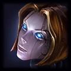

Em Piltover, onde sonhos individuais podem se tornar o progresso de todos, nasce uma estrela.
Quando criança, Seraphine já amava música, principalmente as canções de ninar de seu pai. As canções eram lindas, porém tristes. O pai as trouxera para Piltover quando ele e a mãe de Seraphine, dois zaunitas,vieram em busca de uma vida melhor na Cidade do Progresso.
Debruçada na janela da oficina de hexcústica da família, onde aparelhos quebrados voltavam a funcionar, Seraphine cantava no ritmo das ruas. As celeumas dos Portões Solares, o assobio dos aprendizes, até mesmo a melodia das conversas; em uma cidade vibrante como Piltover, ela nunca estava sozinha.
Com o tempo, Seraphine percebeu que podia sentir músicas muito íntimas e pessoais, que pessoas comuns não conseguiam ouvir. E, à medida que ela crescia, cresciam também os seus dons. Ela ouvia a alma de todos, fossem bondosos ou cruéis, e isso fazia das ruas que ela tanto amava uma agoniante cacofonia de desejos conflitantes. Como ela poderia entender as vozes se não havia harmonia? Certos dias, ela se escondia em um canto, trêmula e tapando os ouvidos, incapaz de se ouvir dentro do caos.
Os pais de Seraphine deixaram tudo para trás para que ela pudesse nascer em Piltover, e aquele sofrimento os angustiava. Eles juntaram todas as economias e compraram um fragmento de um raro cristal hextec, transformando-o em um dispositivo que abafava a audição mágica da filha. Pela primeira vez em anos, ela desfrutou do silêncio.
No entanto, naquela calmaria, Seraphine ouviu alguma coisa, ou alguém. O cristal tinha uma consciência, nascida de sangue brackern. Embora fosse difícil ouvi-la e mais difícil ainda compreendê-la, a voz era gentil. Entoando um hino de desertos distantes e antigos conflitos de ancestrais, mil anos de história cantaram em uníssono.
Maravilhada, Seraphine pediu orientação. Oprimida pelos anseios que a cercavam, ela temia não encontrar sua própria música. E se ela fosse apenas as vozes dos outros?
"Todos nós somos o resultado de outras vozes", respondeu a presença.
E, lentamente, ela aprendeu a controlar os ruídos. A voz raramente se expressava com clareza, mas Seraphine sentia que aquela influência a ajudava a se comunicar com o público e a cantar com eles, passando a usar cada vez menos o abafador providenciado pelos pais. Na primeira vez que se apresentou diante de uma plateia para testar suas habilidades, o nervosismo tomava conta. Mas ela continuou cantando, e o público foi crescendo. Não demorou muito para que Seraphine conquistasse uma legião de fãs, que lotavam shows nas maiores arenas de Piltover. Mesmo assim, ainda faltava algo; na plateia e nela mesma. Ela decidiu voltar à cidade que seus pais se esforçaram tanto para deixar para trás: Zaun.
Quando desceu pela primeira vez no velho elevador barulhento que a levaria até lá, de certa forma Seraphine se sentiu em casa, mas ainda uma estranha. Em Zaun, ela ouvia refrãos de resiliência e ambição semelhantes aos de Piltover, mas com uma vibração de liberdade muito peculiar. Depois de algum tempo lá embaixo, ela também passou a identificar o sofrimento. O medo dos barões da química que controlavam todas as oportunidades. O ódio dos piltovenses mimados e arrogantes lá de cima. Havia muita discórdia. Ela começou a se apresentar e a ouvir essas novas multidões; a forma como seus corações cantavam suas lutas. As duas cidades não tinham sido separadas por um mero mal-entendido. Ela queria reparar, unir. Mas continuava ouvindo o mesmo refrão: "Em Zaun, não é tão simples assim".
Com o tempo, ela passou a ver Piltover cada vez menos como seu lar.
Seu cristal hextec cantava uma elegia sobre o que o ódio reprimido poderia causar. Seraphine não podia deixar que isso acontecesse com as cidades que amava. Com a ajuda dos pais, ela desmontou seu abafador e, juntos, eles deram um propósito oposto ao cristal. Agora, em vez de reprimir, a nova plataforma amplificaria seus dons, permitindo que ela ouvisse os demais em toda a sua complexidade. Seraphine tinha esperança de também ouvir a voz do cristal em meio às outras. Ela usou a plataforma como uma espécie de palco, posicionando-a no Entressol entre Piltover e Zaun. Quando a multidão se aglomerou e as luzes se acenderam, ela ouviu os moradores dos dois lugares, juntos e amontoados para ouvi-la.
Era uma nova música. Não era apenas compreensão, era união.
Não era perfeita. Talvez nunca viesse a ser. Mas a voz dela importava. E, assim, Seraphine percebeu que talvez pudesse ajudar as pessoas na busca por suas vozes.
Ela se tornou uma estrela tanto em Piltover quanto em Zaun. Fortalecida por seus dons e sua tecnologia hextec, ela amplifica as vozes de todos com uma injeção de otimismo, pois, para ela, todas as vozes merecem ser ouvidas, principalmente as de quem resiste – elas são uma inspiração, e Seraphine fará de tudo para inspirá-las também.
Piltover é uma cidade próspera e progressiva cujo poder e influência estão em crescimento. Ela é o centro cultural de Valoran, onde a arte, o artesanato, o comércio e a inovação andam de mãos dadas. Seu poder não vem de soberania militar, mas através dos motores do comércio e do pensamento de vanguarda. Situada no despenhadeiro acima do distrito de Zaun e de frente para o oceano, frotas de navios passam por seus portões do mar gigantescos, trazendo iguarias do mundo todo. A riqueza que isso gera deu lugar a um aumento sem precedentes no crescimento da cidade. Piltover se reinventou - e continua se reinventando - como uma cidade onde fortunas podem ser feitas e sonhos podem ser realizados. Os crescentes clãs de mercadores investiram no desenvolvimento dos empreendimentos mais incríveis: grandes loucuras artísticas, pesquisa hextec esotérica e monumentos arquitetônicos em seu poder. Como cada vez mais inventores estão se envolvendo com a história de hextec, Piltover se tornou um ímã para os artesãos mais habilidosos do mundo.

Caitlyn

Camille

Ezreal

Heimerdinger

Jayce
Orianna

Seraphine
Vi